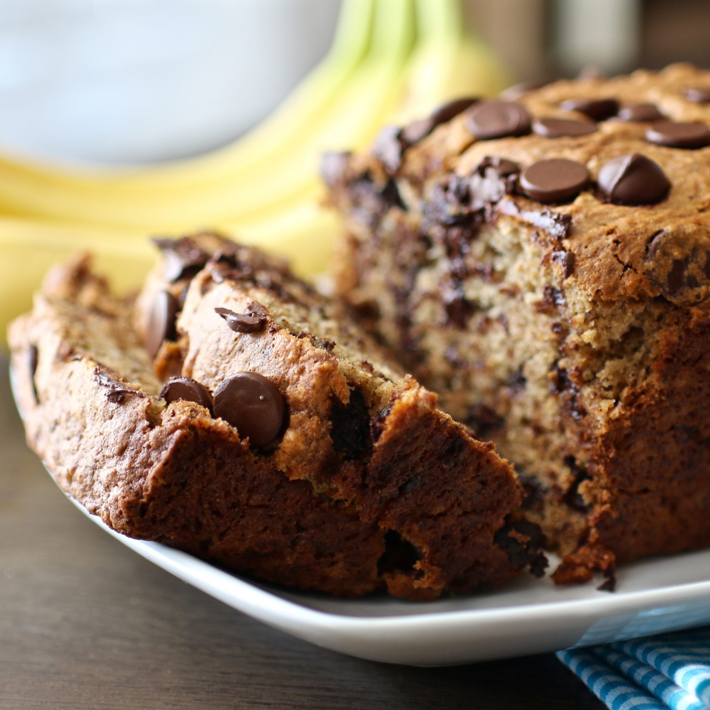

Banana Chocolate Chip Bread

Description
Very ripe bananas keep this quick bread sweet and moist, while chocolate chips bring sweetness.
Ingredients
- 2 cups all-purpose flour
- 1 teaspoon baking powder
- 1 teaspoon baking soda
- 1 teaspoon salt
- 3 ripe bananas, mashed
- 1 tablespoon milk
- 1 teaspoon ground cinnamon, or to taste
- ½ cup butter, softened
- 1 cup white sugar
- 2 eggs
- 1 cup semisweet chocolate chips
Steps
- Preheat oven to 325 degrees F (165 degrees C). Grease a 9x5-inch loaf pan, preferably glass.
- Mix flour, baking powder, baking soda, and salt in a bowl. Stir bananas, milk, and cinnamon in another bowl. Beat butter and sugar in a third bowl until light and fluffy. Add eggs to butter mixture, one at a time, beating well after each addition. Stir banana mixture into butter mixture. Stir in dry mixture until blended. Fold in chocolate chips until just combined. Pour batter into prepared loaf pan.
- Bake in the preheated oven until a toothpick inserted into the center comes out clean, about 70 minutes. Cool in the pan for 10 minutes before removing to cool completely on a wire rack before slicing.